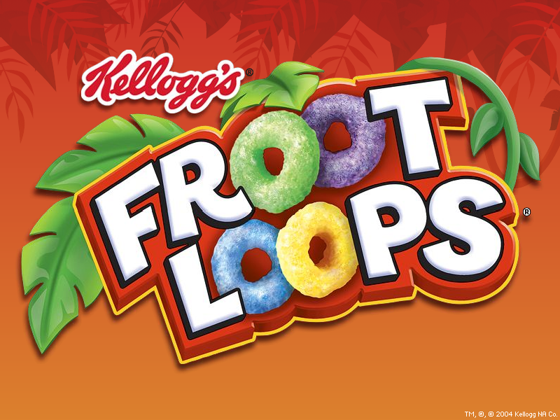

Froot Loops Extras

Froot Loops Cursor (totallyfreecursors.com)
Archived from an old version of totallyfreecursors.com. (repairs made when needed)

DOWNLOAD
 .cur (Windows Cursor) file (2.33 KB)
.cur (Windows Cursor) file (2.33 KB)
Froot Loops Screensaver

DOWNLOAD
.exe file zipped (1.34 MB)